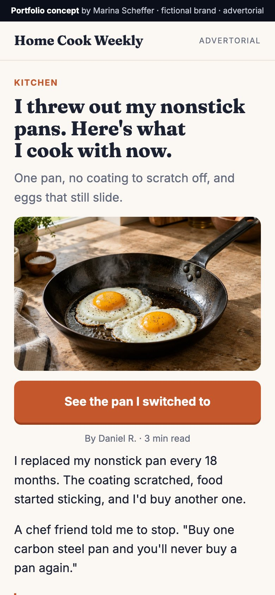
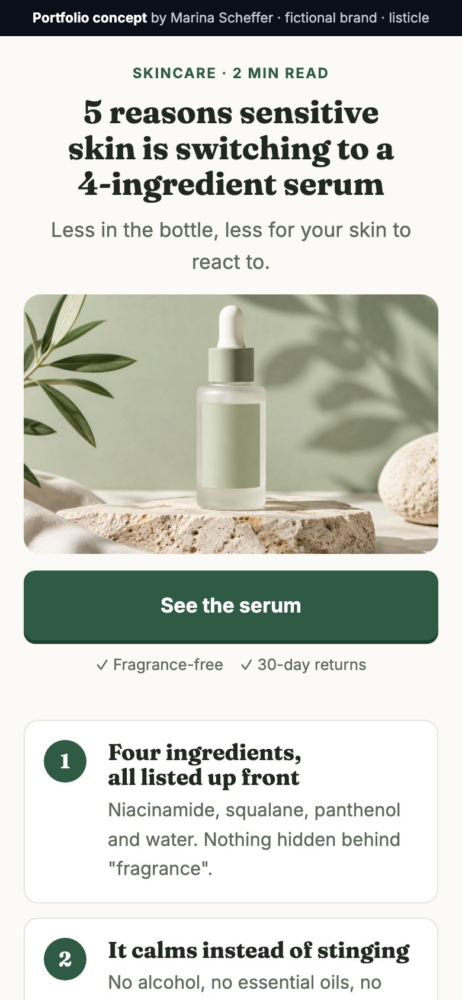

Words that move someone from a scroll to a call
Real copy I wrote and shipped: the ads, the lead form, the email sequence and the page behind one funnel, more landing pages, and the B2B outbound sequences I ran in sales. Results are shown where they exist and left out where they don't.
Four ads, one job each
One instant form, four angles: the founder's story to stop the scroll, the money objection to qualify, the numbers on one deal, and the W-2 earner. October 2026: cost per reach went up 85%, and the copy held cost per lead at $7.02 because click rate went from 7.7% to 11.8%.

Why I started
My wife worked in corporate America for over 25 years. Every Sunday evening, she would get these migraine headaches. Every Sunday evening.
She went to all types of specialists. Finally one of them told her those are stress related migraines, because you're stressed about going back to work on Monday.
January 2017, I was able to retire my wife. And no more migraines.

You don't need a lot of money
One thing people always say is you must have a lot of money to invest in real estate. That is furthest from the truth.
What you need is somebody to show you the order this goes in. That's it.
I put the whole thing in a free training. Five minutes, and it starts the moment you click.
The numbers
The numbers on one flip
We did a flip that came out to about $35,000. Took six months, start to finish.
I'm not going to hype that up. It was work. But the numbers worked because we did it in the right order.
That order is what I walk you through in the free training. Five minutes, and you can watch it right now.
The W-2 earner
Another way to build
If you work a full time job, you get taxed before you ever see your paycheck. Right?
And I know what you're thinking. You don't have hours in the evening to go manage properties. You don't have to. With a system in place, other people handle the managing.
Rental income, potential tax advantages, and tenants helping pay down the mortgage while you hold it.
The free training walks through how that actually works. Five minutes.
One question that tells the rep who to call first
Name, email, phone, and one qualifier. 39 of 40 leads left a phone number, and 21 of 40 said they want to start within three months. Those go to the top of the call queue.
Intro screen
Nobody ever showed you the order things go in
Twenty years. Over a hundred flips. Around forty rental properties. In the next five minutes Sean walks you through the six steps, in the order they actually happen.
The qualifier
When are you looking to get started in real estate?
In the next 3 months
Sometime this year
Just learning for now
Thank-you screen
You're in. Now watch the training.
Five minutes, and it walks you through the six steps in the order they actually happen. Getting in afterwards is $8.99 a month.
[Watch the training]
Each email has one job and one button
Starts the second someone fills in the form. Written first person and signed by the founder, every button goes to the training, and the price appears once, in the last email. Open any email to read it.
Day 0You asked how to start. Here is the honest answer.Job
Most people buy a house and hope. That is not investing. That is gambling with a mortgage attached.
There are six steps to doing this properly, and they only work in the order they happen. Skip one and the whole thing stops compounding.
I walk through all six in the training below. It takes a few minutes and it will tell you whether this is for you.
[Watch the training]
Sean
Job: reframe. Investing is a system, not hope.
Day 2You do not need a lot of moneyJob
This is the reason most people never start. They assume you need savings they do not have.
I did not start with a pile of cash. I started with a line of credit and a system for knowing which property was worth buying.
The money matters far less than knowing what a deal actually is before you fall in love with a house.
[Watch the training]
Sean
Job: kill the biggest objection.
Day 5The six steps, in the order they happenJob
Purchase. Rehab. Rent. Maintain. Appreciation. Build wealth.
The order is the entire thing. Most people do the first one, jump to the fifth, and then wonder why nothing is compounding.
Step four is the one nobody talks about, and it decides whether you still own the property in five years.
[Watch the training]
Sean
Job: give the method and leave one open loop.
Day 8Who is actually teaching you thisJob
I am Sean K. Langston. Broker, Realtor, ABR, CDPE, SFR. Investor and coach.
I am not someone who read a book about this. I own the properties, I have made the mistakes, and I teach the system I actually used.
That is worth knowing before you take advice from anyone on the internet, including me.
[Watch the training]
Sean
Job: authority, without hype.
Day 12It costs $8.99 to startJob
Less than two coffees, and you can cancel whenever you like.
You get the modules, a quiz on every step, the full glossary, and the members-only community. The archive grows as I record new trainings.
If it is not for you, you will know in the first module and you will have lost the price of a coffee.
[Start for $8.99]
Sean
Job: the offer. The price shows up once, here.
The page keeps the promise the ad made
Written and built by me, and wired to the pixel, the form and the CRM before they go live.
Training page · hero
You know more about real estate than most people. You still don't own any.
Or you own one, and you've been stuck there for three years.
It was never the money. Nobody ever showed you the order things go in. Give me five minutes and you'll know which step you're actually on.
[Start as an Apprentice, $8.99/month]
Training page · the price, handled
Why it's $8.99
You've probably already spent money on this. A book, a course, a weekend seminar. Most people at your stage have.
That's why the first step is $8.99 and not $897. It isn't bait, it's the price. Get in, find out whether this one is different, and leave if it isn't.
This isn't the expensive part. Buying the wrong house once is the expensive part.
Training page · objections
Four reasons people never start
"I don't have enough money." "I wouldn't know how to find a deal." "I work full time. I don't have hours to give this." "I don't know anything about construction, or tenants, or any of it."
I'm not going to tell you those aren't real. I had every one of them when I started.
What I'll tell you is that they're the same problem wearing different clothes. It isn't money and it isn't time.
Training page · authority, without hype
Why listen to me
I don't make my living teaching this. I make it doing it.
I'm not going to show you screenshots of what other people made. You've seen those videos and so have I. What I'll tell you is what happened in my own house. In January 2017 my wife was able to stop working.
I can't promise you that. Nobody honest can.





Sequences where every touch earns the next one
I ran inbound and outbound end to end: one sequence per sector, email, LinkedIn, WhatsApp and calls on the same contact, a sector case inside the first pitch, and a short pre-qualification conversation before the sales call. The team averaged 25 calls a month from cold leads, and one referral follow-up sequence I ran went to 62 contacts: 52% opened, 10% replied and 5% booked a meeting. Translated from Portuguese; names in brackets.
Warm, founder-backed invite · CEOs · 5 business days
The logic: a curated invite instead of a pitch, two criteria the prospect checks against themselves, two time options in every touch, and day 3 asks for their challenge so the session fits them.
Hi [First name], I'm [Name] from Samba. Gustavo Caetano and our leadership team picked a few companies to share a product optimization case with this week, focused on experience and efficiency. You were the first name they picked, so I'm reaching out to you first to see if it makes sense.
It comes down to two things: 1) your product has room to be more competitive, 2) you want to be the person who takes the company to the next level.
If that's you, just send me your availability. How about [day] at [time] or [day] at [time]?
Hey [First name], I noticed we're connected through Gustavo. I sent you an invite on WhatsApp, and here's a short overview of what we'll cover in the session: [link]. The two criteria to join are: 1) your product has room to be more competitive, 2) you want to be the person who takes the company to the next level.
Hi [First name], this is [Name] from Samba. I'm calling because Gustavo Caetano and our leadership team want to invite you, this week on [day] at [time], to see a product optimization case focused on experience and efficiency. If that day or time doesn't work, I'm sure I can move it.
Subject: An invite from Samba's leadership: product experience and efficiency
Hi [First name],
Gustavo Caetano and our leadership team want to invite you, this week on [day] at [time], to see a product optimization case focused on experience and efficiency. It comes down to two things: your product has room to be more competitive, and you want to be the person who takes the company to the next level.
If that day or time doesn't work, I'm sure I can move it. I've attached a short overview of the session.
Hi [First name], I've been trying to reach you about an invite on product experience and efficiency. Is there a specific challenge you're dealing with right now? If so, we can bring insights on it and make the session more useful for you.
Hi [First name], I know calendars get busy. If hearing how a company like yours made its product more efficient sounds useful, I can find you a new slot on [day] at [time].
Cold, pain-led · financial services
The logic: open on the three challenges the sector keeps naming, prove it with one public case (B3), repeat the case in the follow-up, and end by asking for a short conversation, not a sales meeting.
Hi [First name], how are you? I saw on your LinkedIn that you're at [Company]. We work with companies in your space, and the challenges we keep seeing are hyper-personalization, the customer journey and churn.
With our background in data analytics, machine learning and AI, we can help [Company] build personalized interactions, with relevant recommendations.
A case: B3, the Brazilian stock exchange. We built their education hub, where they sell and deliver investor courses, and their entire data infrastructure.
Could we talk on [day] at [time]? I'll walk you through a few more cases.
Hey [First name], I'm connecting with a few [job title]s because in [sector], the same challenges keep coming up: the customer journey, churn and hyper-personalization. Samba can help [Company] build personalized interactions with relevant recommendations. Open to a chat?
Hi [First name], I sent you a note recently about how we could help [Company] with data analytics, machine learning and AI. Did you get a chance to read it? I'd like to know if it's worth a conversation.
Here's what we did for B3: their education hub, where they sell and deliver investor courses, and their entire data infrastructure.
Looking forward to hearing from you.
Hi [First name], I came across this and thought it might be useful to you. [material]
How about we do the interview on [day] at [time]?
Referral + data · education CEOs
The logic: the founder's referral opens the door, a number from our own market study names the problem, and the email delivers the study as value before asking for anything.
Hi [First name], I'm [Name] from Samba. Gustavo Caetano suggested we get in touch. Our recent study found that 74% of educational institutions feel pressure to adopt AI but aren't sure how to do it well. We'd like to offer you a demo built around your institution's needs. How about [day] at [time] or [day] at [time]?
Subject: Gustavo Caetano + AI in education
Hi [First name],
After a conversation with Gustavo Caetano, we saw the potential for your institution to lead the AI shift in education. Our market study showed that many institutions feel the need but hold back because they lack the know-how or the resources. That's the gap we're here to help with.
I've attached the report with the market insights and the solutions we propose.
LinkedIn for a founder, Instagram for a coach
Different platforms, same rule: one reader, one point, one action.
LinkedIn data post · B2B tech founder
The largest data centers in America running on Nvidia chips, ranked by estimated operating IT capacity.
Colossus 2 in Memphis leads at 946 MW, followed by Stargate in Abilene at 824 MW and Microsoft's Fairwater in Atlanta at 636 MW. Two of the top ten are in Memphis.
Data centers have become a symbol of this AI economy, and the people that live near data centers do bear the impact.
[Company] verifies and organizes the households around data centers and gives developers a compliant way to offer flexible benefits including shared ownership.
Source: Epoch AI
The logic: a ranked chart to stop the scroll, the numbers people will repeat, the human side of the story, then what the company does in one line, with the source.
Instagram · testimonial reel · health coach, 197K
She's a single mom of two, supporting the whole family and being told: "Your BMI needs to be 28." No one asked what got her here.
What looked like a motivation problem was actually exhaustion, iron deficiency, low thyroid and high inflammation, and no one had tested any of it, until now. DM me "PROCESS" if you're done guessing and ready for a plan that fits your life.
Instagram · POV reel · fertility
Everyone says it's a shared journey. But when it's time to carry the weight, it rarely feels equal.
Support is showing up for the hard parts together. If you're ready to step up and be the best you can be in your fertility journey, DM me "READY".